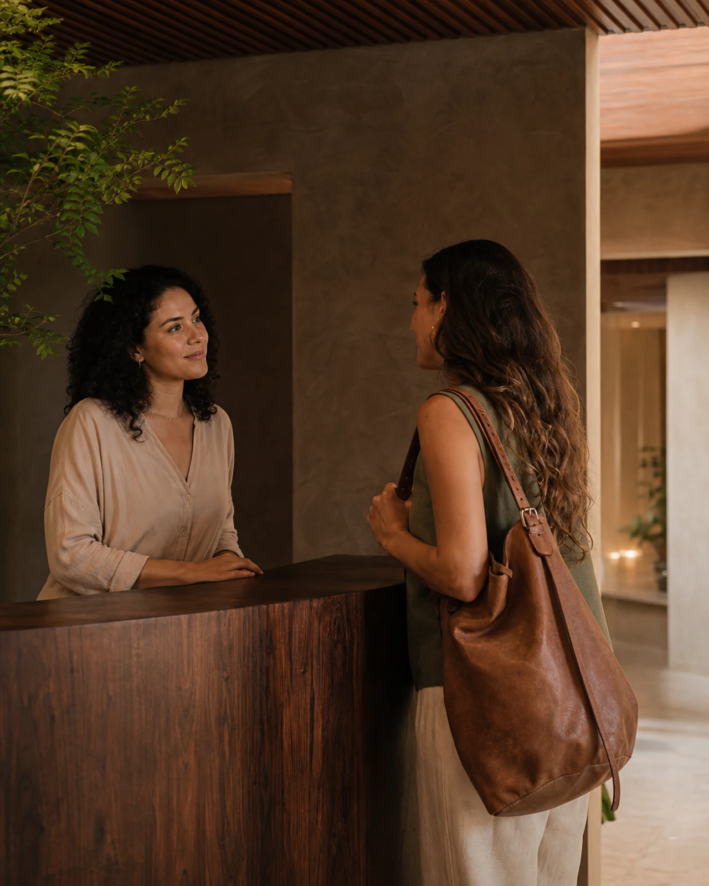

01
Não sei por onde começar
Um percurso guiado para quem ainda não sabe exatamente o que procura e prefere reconhecer as possibilidades antes de escolher.

A porta de entrada
01
Antes de escolher
Algumas pessoas chegam procurando um atendimento, um curso ou uma atividade. Outras chegam apenas com uma pergunta. Em ambos os casos, o primeiro gesto é o mesmo: escutar.
A partir dessa conversa, ajudamos você a compreender os caminhos do Ecossistema Potala sem pressa e sem impor uma única resposta.
Possibilidades de chegada
01
Um percurso guiado para quem ainda não sabe exatamente o que procura e prefere reconhecer as possibilidades antes de escolher.
02
Interface em preparação
Um espaço de conversa livre com a futura inteligência do Portal para perguntas sobre o Instituto, seus serviços e conteúdos.
03
Orientação humana e solidária
Um encontro de acolhimento e orientação para conversar sobre suas necessidades e reconhecer possibilidades entre atendimentos, cursos e atividades.
04
Dúvidas organizadas por temas sobre horários, inscrições, modalidades, localização e as diferentes formas de participar da vida do Instituto.
05
Interface em preparação
Sugestões personalizadas de cursos, atividades, eventos, profissionais e conteúdos para dar continuidade à jornada de cada visitante.
06
Um acolhimento inicial para conhecer você, apresentar os ambientes e descobrir quais caminhos podem fazer sentido neste momento.
07
Acolhimento prioritário
Um caminho mais direto para quem demonstra sofrimento significativo e precisa chegar ao atendimento humano e aos recursos institucionais disponíveis.
08
Conte se encontrou o que procurava, o que ainda fez falta ou quais novos interesses poderiam orientar a evolução do Portal.
Prévia do assistente
Esta é a interface visual da futura conversa inteligente do Portal. A integração será feita em uma próxima etapa; por enquanto, nenhuma mensagem é enviada ou armazenada.
Estamos aqui
Atendimento humano
Rua 24 de Maio, 748
Centro · Indaiatuba, SP
Antes de ir embora...
Às vezes, o caminho começa quando alguém nos ajuda a formular a primeira pergunta.
Voltar à travessia